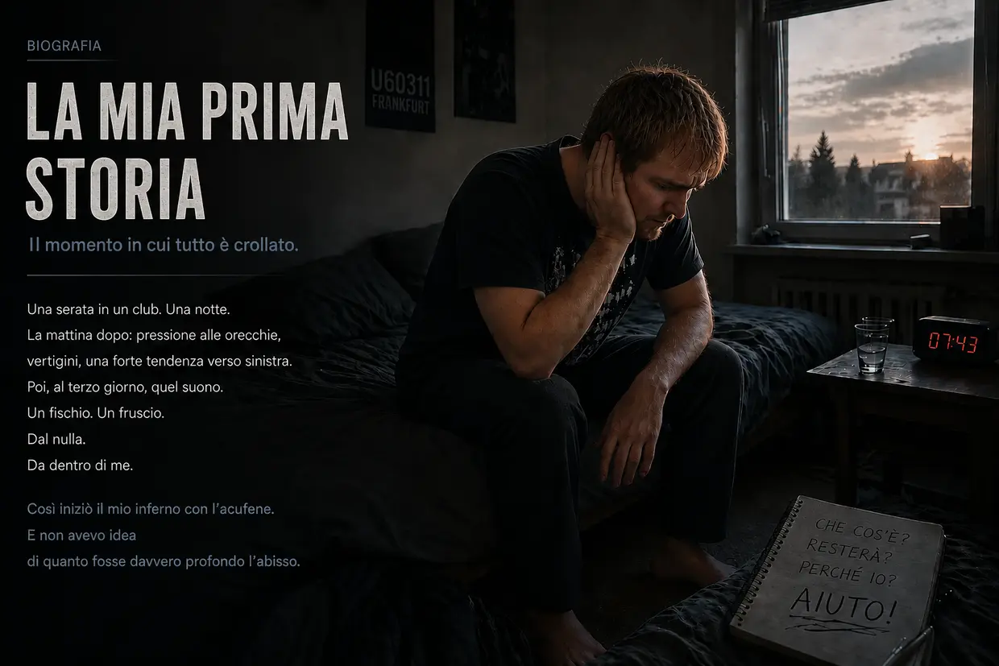
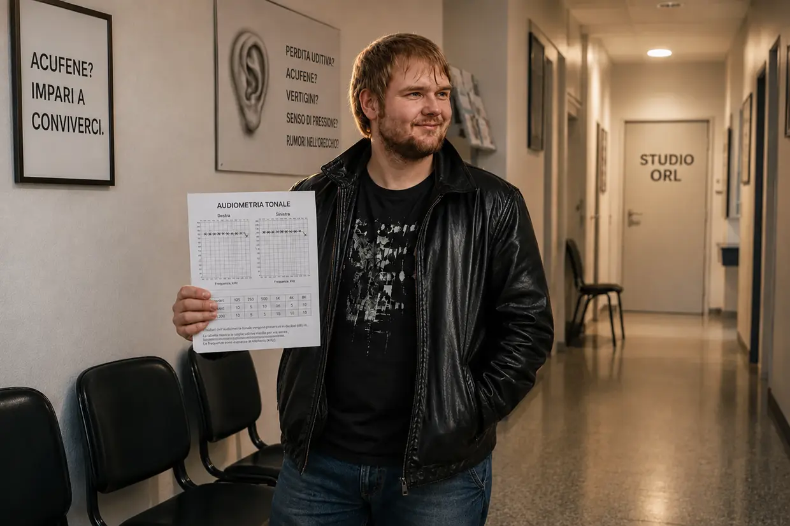
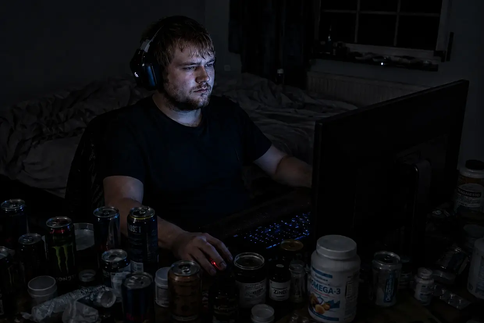
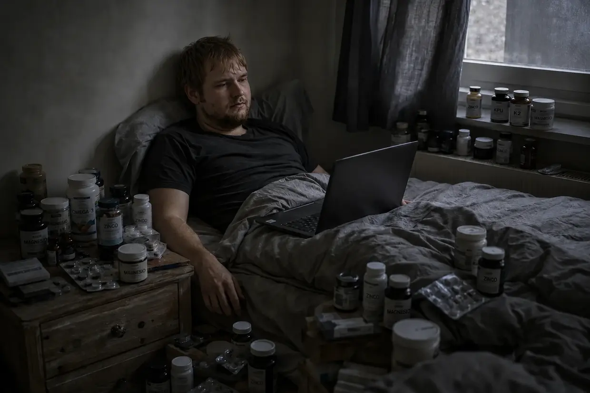

La mia via d'uscita dall'inferno dell'acufene (la versione breve)
Ciao, mi chiamo Dustin Müller.
Se sei appena arrivato su questa pagina, probabilmente sei nello stesso inferno in cui ero io allora. Se vuoi leggere il racconto dettagliato della mia guarigione, lungo 9.000 parole, qui trovi la biografia completa.
Per tutti gli altri, quelli che cercano risposte rapide e il filo conduttore: ecco la sintesi compatta di come allora ho combattuto il mio acufene, portandolo dal 100% allo 0% con logica ferrea e biohacking.
1. Il crollo (autunno 2011)
Avevo 23 anni, ero sano come un pesce e pensavo che il mio corpo potesse reggere qualsiasi cosa. È bastata una sola serata in un club techno di Francoforte (U60), proprio davanti alla cassa dei bassi, per staccare la spina. La mattina dopo mi sono svegliato «solo» con vertigini fortissime, una pressione sorda alle orecchie e una marcata tendenza a deviare verso sinistra. Pensavo che il mio corpo avrebbe sistemato tutto da solo. Ma il terzo giorno si è svegliato il vero mostro: all'improvviso sono comparsi quel fischio infernale e quel fruscio nell'orecchio sinistro — e un lieve bip in quello destro. Il mio sistema era crollato definitivamente.
2. Il fallimento del sistema («Deve imparare a conviverci»)
Nel panico sono corso da un otorinolaringoiatra all'altro. Le risposte che ho ricevuto allora sono state uno schiaffo in faccia: mi hanno detto che il mio udito era danneggiato in modo permanente e che dovevo «imparare a conviverci». Mi hanno consigliato perfino di coprire il suono con la musica o con il «rumore bianco» (mascheramento/TRT) e, all'occorrenza, mi hanno offerto degli antidepressivi. Dopo aver seguito questo consiglio e aver continuato a espormi a musica e rumore, il lieve suono già presente nell'orecchio destro è peggiorato nettamente pochi giorni dopo.
Col senno di poi, quel «mascheramento» è stato per me un consiglio fatale, che ha portato al secondo crollo, quello totale: fidandomi ciecamente dei medici, durante un tragitto in auto verso scuola ho ascoltato musica ad alto volume per «distrarmi». Per le mie cellule ormai scariche, è stata la goccia che ha fatto traboccare il vaso. A scuola è comparsa all'improvviso una brutale sensibilità ai rumori (iperacusia), la vista ha cominciato a girarmi («capriola» vertiginosa) e il ristagno di ioni nell'orecchio ha completamente inondato il mio organo dell'equilibrio (sintomatologia di tipo Ménière). Ero completamente isolato e non riuscivo più a uscire di casa.
3. La svolta: la prova contro il «rumore fantasma»
Dopodiché, uno specialista dell'acufene ha cercato di convincermi che, dopo alcuni mesi, il mio acufene fosse ormai soltanto un «rumore fantasma» nel cervello. Il caso mi ha fornito la prova contraria: mentre mi curavano un'infiammazione acuta del condotto uditivo in una clinica universitaria, un medico mi ha aspirato i condotti uditivi con un apparecchio rumoroso. Proprio in quell'istante il mio acufene è esploso, come risposta fisica e immediata a quello stimolo sonoro!
Per me la logica era inesorabile: un rumore fantasma psicologico non reagisce in tempo reale a un rumore meccanico. Il mio acufene non era qualcosa di fisso. La fonte difettosa era ancora nell'orecchio — e a ogni nuovo rumore le cellule urlavano aiuto.
4. Il protocollo del silenzio

Ero ricoverato in ospedale (per una terapia con cortisone che non ha funzionato) e per giorni le mie orecchie sono rimaste completamente isolate dal mondo esterno da spesse bende di garza. Lì ho notato per la prima volta una riduzione vera del suono. Ne ho tratto le conseguenze, ho ignorato tutti i consigli medici sulla «distrazione» e ho passato mesi in un silenzio quasi assoluto. Niente musica, niente cuffie, niente rumore quotidiano. Così il mio acufene è sceso di circa il 25% (a sensazione, chiaro – un acufene non lo misuri col righello). Ma poi la guarigione si è bloccata del tutto. Il mio corpo era in stallo.
5. La scintilla B12 (la deduzione a sangue freddo)
La svolta assoluta è arrivata di nuovo da un episodio in famiglia. Mio padre, per una malattia dei nervi, si faceva iniezioni di vitamina B12 ad alto dosaggio ed era letteralmente rifiorito.
Lì ho fatto due più due: ero vegetariano dall'età di 15 anni E per molto tempo avevo sofferto di una grave gastrite cronica (infiammazione della mucosa gastrica). (Quella gastrite, tra l'altro, l'avevo sconfitta poco prima con argilla minerale, probiotici e bucce di psillio – la prima prova che i medici possono sbagliarsi!) La combinazione tra alimentazione senza carne e stomaco malato era lo schema perfetto per un'enorme carenza di B12.
Spinto da questa logica, mi sono fatto praticare anch'io un'iniezione intramuscolare da mio padre. Importante: sconsiglio espressamente di farlo senza la supervisione di un medico. La mattina dopo il mio acufene era diventato molto più debole (un miglioramento di circa il 40%)! La mia conclusione: la B12 è il carburante principale della produzione di ATP. Con il rumore le mie cellule avevano bruciato il loro ultimo ATP. L'iniezione ha inondato di energia le cellule, il «motore cellulare» è ripartito e durante la notte il mio corpo ha potuto avviare le riparazioni.
6. Il materiale che mancava (membrane cellulari e mielina)
Nonostante la B12, nel corso della giornata il mio acufene tornava sempre a peggiorare – si faceva di nuovo più forte. Il motivo? La batteria si caricava, sì, ma la struttura fisica delle cellule era ancora rotta.
A seguito di un'altra crisi dolorosa (una colica biliare) sono incappato per caso nel granulato di lecitina, che mi ha aiutato contro la colica. Importante: in caso di calcoli biliari, rivolgiti assolutamente a un medico – quella che racconto è la mia esperienza personale in una situazione acuta, non un consiglio terapeutico. Solo tre giorni dopo la prima assunzione di lecitina, avevo raggiunto all'improvviso un miglioramento del 60–65% rispetto al punto di partenza!
La biologia alla base di tutto questo mi affascinava: la lecitina (i fosfolipidi) non è importante soltanto per il rivestimento dei nervi (la guaina mielinica), ma è anche il principale componente strutturale di ogni singola membrana cellulare. A causa dell'enorme stress ossidativo prodotto dal rumore in discoteca, le pareti delle mie cellule ciliate sovraccariche erano diventate letteralmente fragili e permeabili. Secondo il mio modello esplicativo di allora, la B12 forniva l'energia (ATP) e la lecitina il «cemento cellulare» necessario a sigillare di nuovo fisicamente le cellule ciliate danneggiate e a riparare un presunto falso contatto nel nervo uditivo.
7. Il «Carpet Bombing» (la vittoria al 100%)
Per sfondare definitivamente il collo di bottiglia, ho lanciato un «carpet bombing» ortomolecolare senza pietà. Ho rifornito il mio corpo di tutto quello che gli serviva per riparare le cellule:
- Vitamine del gruppo B ad alto dosaggio (B1, B2, B3, B5, B6, B9, B12) per aggirare il mio stomaco, all'epoca ancora malandato
- 30 grammi di lecitina
- Amminoacidi e 3 grammi di olio omega-3 di primissima qualità
- Vitamina C, minerali (zinco, magnesio) e concentrati di micronutrienti (LaVita, Dr. Rath)
Il fade-out:

Con questo massiccio apporto di nutrienti e la rigorosa osservanza del silenzio, la dinamica è cambiata definitivamente. Al mattino il suono diventava sempre più debole e i peggioramenti serali duravano sempre meno. Fino a quella mattina in cui mi sono svegliato, ho spinto i tappi in profondità nelle orecchie per fare la prova e ho trovato un silenzio di tomba assoluto, liberatorio. Il dimmer era a zero.
Secondo il mio modello esplicativo di allora, la mia guaina mielinica era riparata, l'impalcatura di actina delle mie cellule ciliate era di nuovo in piedi e il mio cervello aveva spento l'amplificatore d'emergenza. La biologia aveva vinto.
Prendi in mano la tua situazione
Se sei nello stesso buio, vorrei mostrarti che una speranza c'è. Su questo sito ho documentato con precisione quali collegamenti biologici ho scoperto per me e quali passi di biohacking hanno tirato fuori il mio corpo dalla modalità vittima. Cosa fai tu con queste informazioni e come sostieni la biologia del tuo corpo – idealmente dopo averne parlato con il tuo medico – dipende solo da te. La mia strada è la mia storia. È arrivato il momento che tu scriva la tua.
Avviso importante:
Quello che leggi qui è il resoconto della mia esperienza personale. Ogni corpo e ogni storia sono diversi.

Il precipitare nella CFS e il flush da niacina
La reazione a catena fatale: il precipitare nella CFS
Se pensi che dopo la guarigione dal mio primo acufene sia andato tutto bene, ti sbagli. Tuttavia, questo crollo, che ho vissuto come una minaccia alla mia stessa esistenza, non è stato il «prezzo» della guarigione dall'acufene, ma una reazione a catena fatale che ha sconvolto completamente l'equilibrio del mio sistema.
Il mio corpo correva dritto verso il baratro, intrappolato in un insidioso paradosso biologico: mi spingevo oltre ogni limite con uno stile di vita eccessivo, in pieno «overdrive». Nel breve periodo questo mi dava molta energia e mi permetteva di fare molto, mentre le mie riserve continuavano a esaurirsi. Non mi rendevo conto di quanto, sul lungo periodo, stessi prosciugando il mio sistema.
Un mix di trauma di fondo mai elaborato, strascichi chimici del cortisone, quella sovraeccitazione cellulare senza pause e un intestino completamente distrutto da antibiotici aggressivi (e da farmaci che bloccano la secrezione acida) mi ha definitivamente tolto il terreno da sotto i piedi.
Quando poi ci si è messo anche il virus di Epstein-Barr (la mononucleosi), il mio sistema è collassato del tutto. La diagnosi: sindrome da fatica cronica (CFS). Per più di un anno sono rimasto quasi completamente allettato. I mitocondri (le centrali energetiche delle cellule) hanno quasi del tutto smesso di produrre energia (ATP).
Il vicolo cieco da 6.800 euro e la mia arroganza più grande

Nella disperazione compravo tutto, alla cieca. Dai big americani come Life Extension o Thorne, alle costose flebo di vitamina C, fino ai trattamenti per la KPU e alle terapie ormonali sostitutive. Ho provato un allenamento simulato in quota (IHHT), che ho dovuto interrompere per il panico, ed ero a un passo dal ricovero in una clinica specializzata in CFS.
In quell'unico anno, per questa follia, ho bruciato senza esagerare circa 6.800 euro. Il risultato? Zero assoluto. Il mio corpo non ha accettato niente di tutto questo.
L'ironia tragicomica: durante le mie ricerche notturne sono capitato sul sito dell'azienda tedesca FitLine. Ci sono rimasto esattamente 4 o 5 secondi, ho visto la grafica e ho pensato, pieno di arroganza: «Ma che razza di nome idiota per un bibitone sportivo alla moda? A me serve medicina pesante, non succhi colorati». E così non ho notato affatto la garanzia soddisfatti o rimborsati al 100%. Il mio ego e le mie conoscenze superficiali mi sono costati molti altri mesi nell'inferno della CFS.
2013: il flush da niacina e il riavvio cellulare
Nel punto più basso in assoluto, nel 2013, ero costretto a letto per il 98% del tempo. A quel punto YouTube ha fatto comparire nel mio feed il video di un Heilpraktiker che spiegava le cose in modo incredibilmente olistico e competente. Quando ho visto che si trovava a soli 30 chilometri da me, mi ci sono trascinato con le ultime energie, perché mia madre si rifiutava ormai categoricamente di accompagnarmi da altri medici.
Mi ha sciolto una polvere nell'acqua – un liquido arancione acceso. Era esattamente il set FitLine che avevo liquidato con arroganza qualche tempo prima!
Quello che è successo dopo 6–8 minuti è stato pura follia: si è scatenato un flush da niacina potentissimo. Mi si è scaldato tutto il corpo, un flusso sanguigno potentissimo mi ha attraversato le vene e la pelle mi si è arrossata. Per la prima volta dopo più di un anno ho sentito energia vera, fisica, dentro le mie cellule.
Il vero problema: il mio corpo si trovava in un triplice blocco. Primo, il mio apparato gastrointestinale era completamente squilibrato dallo stress continuo e dagli antibiotici (disbiosi). Secondo, al mio intestino mancava semplicemente l'energia cellulare (ATP) per digerire capsule solide. Terzo, le mie cellule erano così acidificate dalla modalità anaerobica di emergenza che quasi non lasciavano più entrare nutrienti. A livello cellulare stavo morendo di fame con i piatti pieni davanti.
Il set di nutrienti liquido, ad altissima biodisponibilità, ha spezzato di colpo quell'enorme blocco dell'assorbimento.
Ho messo da parte l'orgoglio e da quel momento ho preso i prodotti ogni giorno, con costanza. I risultati erano quasi surreali:
- Dopo 20 giorni: riuscivo di nuovo a fare le scale normalmente.
- Dopo 2 mesi: non ero più costretto a letto e riuscivo di nuovo a pedalare con forza.
- Dopo 3–4 mesi: ho portato a termine un corso di informatica senza crollare fisicamente.
- Dopo quasi 2 anni: ero fisicamente più in forma che mai e lavoravo per Rewe online, svolgendo un lavoro massacrante – doppi turni volontari compresi!
L'esperimento più folle della mia vita

Quella conoscenza sull'energia cellulare, conquistata a fatica, era la chiave che mancava alla matrice definitiva dell'acufene. Visto che grazie alla mia routine di nutrienti il serbatoio cellulare di ATP era ormai carico in permanenza al 200% della capacità, un ragionamento continuava a non lasciarmi in pace: durante il primo episodio di acufene avevo pochissima energia e avevo dovuto chiudermi per sei mesi in una stanza silenziosa. Cosa succede se adesso, con questa energia estrema, il mio corpo viene colpito di nuovo dal rumore? Si ripara praticamente «in corsa», in mezzo alla vita di tutti i giorni?
⚠️ Avviso importante: prima di descrivere questo esperimento voglio mettere in chiaro che avrei anche potuto riportarne danni permanenti. Non farlo, per nessun motivo.
Ho preso una decisione che per qualsiasi medico è pura follia: ho provocato di proposito un secondo episodio di acufene, per dimostrare la mia teoria sulla mia pelle.
All'epoca ho abbandonato del tutto ogni precauzione protettiva e ho fatto festa senza limiti (da un lato perché volevo tentare proprio quell'esperimento, dall'altro perché sentivo ancora dentro di me una fortissima fame di vita — la guarigione dalla CFS risaliva ad alcuni anni prima). Durante quella notte ho avvertito soltanto un segnale d'allarme temporaneo (un senso di pressione). Proprio quello, però, mi ha spinto a portare tutto all'estremo. Per settimane ho bombardato le orecchie con musica ad alto volume in cuffia — anche quando ascoltare era ormai diventato puro dolore fisico. Il mio istinto cellulare urlava, ma la ragione ignorava il dolore.
Fino a quella sera: ero seduto al PC, mi sono messo le cuffie – e nel silenzio improvviso ho sentito quel bip sottile nell'orecchio sinistro. Il suono era tornato. Da una parte puro terrore, dall'altra una fascinazione quasi delirante.
Per far crescere per bene il «mostro» in vista del mio test e non soffocarlo subito con il mio scudo di ATP al 200%, ho preso una decisione gelida e altamente rischiosa: sono andato in astinenza totale dagli integratori e ho sospeso apposta il mio set FitLine e la mia lecitina.
Il crollo, il panico e le prove dal vivo
Ci sono voluti tra un mese e mezzo e due mesi prima che il mio sistema crollasse definitivamente sotto quella provocazione continua e senza più scudo. L'acufene è tornato a un brutale 75% del volume del mio primissimo acufene, accompagnato da un caos di suoni completamente nuovo (il classico bip sinusoidale, un bizzarro segnale in codice Morse, un sibilo grave e una sirena).
La sera, a letto, la realtà mi è piombata addosso senza sconti. I rumori erano così assordanti che il panico puro è esploso dentro di me: con questo esperimento idiota mi sono forse rovinato la vita per sempre?
Ma prima di ribaltare la situazione, ho testato il mio sistema letteralmente al suo limite assoluto di carico:
- Il test mandibola-collo: con movimenti ampi della testa e della mandibola riuscivo a influenzare il rumore al 100%, sia nel timbro sia nel volume!
- Il test del rumore bianco (la prova contro il mascheramento): mi sono sparato 2–3 minuti di rumore bianco a volume estremo (esattamente quello che i medici consigliano per il mascheramento). Quando toglievo le cuffie, per qualche secondo c'era un silenzio di tomba assoluto, prima che l'acufene ripartisse a urlare più forte e più aggressivo che mai. La mia prova gelida, fatta sul mio corpo: il rumore bianco costringe le cellule ciliate malate a pompare ioni senza sosta. Quando togli le cuffie, la batteria della cellula è completamente scarica – per qualche secondo la cellula è fisicamente morta e «muta» (periodo refrattario). Appena si ricarica un minimo, il segnale d'emergenza torna indietro con il doppio del volume!
- Il test del battito di mani (shock meccanico): un battito secco delle mani proprio davanti all'orecchio faceva urlare di rabbia l'acufene esattamente in quel secondo.
Guarigione nella vita di tutti i giorni (senza «modalità monaco»)
La mattina seguente dissi basta. L'esperimento era al suo culmine. Ho avviato il mio ritorno con il mio stack di guarigione:
- Il set FitLine completo (Activize, Restorate, Basics e Omega-3 con Q10).
- Granulato di lecitina acquistato in un drugstore.
Questa volta mancava volutamente un elemento molto importante: non assumevo più le polveri amare a base di amminoacidi! Il geniale meccanismo biologico alla base era questo: durante il primo episodio di acufene soffrivo di una grave gastrite cronica e non riuscivo a scomporre le proteine degli alimenti comuni. A quel punto, anni dopo, grazie al risanamento dell'intestino la mia digestione funzionava perfettamente. Secondo il mio modello esplicativo di allora, il mio apparato gastrointestinale ormai sano riusciva a ricavare senza problemi dagli alimenti comuni gli amminoacidi necessari alla guaina mielinica.
La differenza più grande: non avevo assolutamente voglia di tagliarmi fuori dalla vita come la prima volta. Dopo la vittoria sulla CFS la mia fame di vita era semplicemente troppo grande. Ho scelto un compromesso intelligente: evitavo con rigore i picchi di rumore estremi (niente autoradio a tutto volume, niente cuffie, niente discoteche), ma non mi sono ritirato del tutto. Continuavo ad andare a fare la spesa, al luna park, al cinema, e vivevo in modo abbastanza normale.
Il momento «Eh?!» e il silenzio assoluto
È successo l'incredibile: già nelle prime settimane (tra la seconda e la terza) mi sono accorto di colpo: cavolo, il suono sta già reagendo!
C'è stata una riduzione e un assottigliamento percepibili dei rumori. Prima è sparito del tutto quel sibilo nuovo di zecca nell'orecchio sinistro, poi si è assottigliato in modo evidente anche il fischio permanente. Me ne stavo lì, completamente basito, e pensavo: «Eh?! Okay, assurdo… Io qui in fondo vivo ancora del tutto normalmente, evito solo i picchi di rumore forti, e nonostante questo la cosa sta già reagendo?!»
Il mio processo di guarigione è durato circa tre o quattro mesi. È stato uno spegnimento sistematico delle frequenze:
Per primo si è congedato l'orecchio destro: dopo circa due mesi era completamente guarito. Nell'orecchio sinistro sono sbiaditi la sirena e quel rombo grave da camion, finché è rimasto solo il tono sinusoidale ad alta frequenza (il boss finale assoluto).
Come già col primo acufene, le ore del mattino erano l'indicatore decisivo. Sembrava che una manopola si spostasse sempre di più verso la linea dello zero. Verso la fine del terzo mese, la sera il suono era diventato così basso che riuscivo a percepirlo solo se portavo i tappi in una stanza completamente silenziosa o se stavo seduto in bagno, nel silenzio totale.
Per chiudere definitivamente la partita, mi sono procurato ancora delle gocce speciali di vitamina B12, che ogni giorno mi mettevo direttamente sotto la lingua, per dare al sistema l'ultimissima spinta attraverso la mucosa della bocca.
E poi, a un certo punto nelle settimane successive, non c'era più. È sparito. Del tutto. Al 100%.
Avevo superato lo stress test definitivo, il più pericoloso della mia vita. Adesso lo sapevo con una certezza gelida e assoluta: la guarigione dall'acufene da rumore non è un caso, non è fortuna e non è un destino mistico. Per me è stata il risultato logico e inevitabile di aver dato alla mia cellula esattamente quello che le serviva per ripararsi da sola – e per giunta in mezzo alla vita normale di tutti i giorni.
Una breve parola sincera per concludere (parliamoci chiaro)
So benissimo come deve suonare tutta questa storia di malattia e guarigione a chi la legge dall'esterno. Se non avessi vissuto tutto questo sulla mia pelle — la cascata di «coincidenze» assurde, la ribellione iniziale contro l'otorinolaringoiatra, il mio precipitare nel profondo della CFS, le terapie fallite da 6.800 euro e infine quel folle «momento Matrix» in cui l'algoritmo di YouTube mi fa comparire sullo schermo proprio la persona che mi avrebbe salvato: un Heilpraktiker ad appena 30 chilometri di distanza… probabilmente la liquiderei io stesso come un copione hollywoodiano da quattro soldi o una favola inventata. Suona semplicemente troppo folle per essere vera.
Ma è proprio per questo che qui metto tutte le carte in tavola. Questa non è una storia di guarigione inventata, non è una trovata di marketing e tanto meno è esoterismo privo di fondamento. È una verità gelida, fisica e cellulare. Possiedo ogni singola prova fisica di quell'inferno e di quella guarigione: i miei audiogrammi eseguiti da medici, con i marcati cali su determinate frequenze, i referti di laboratorio, le diagnosi e le fatture delle cliniche e dei terapeuti.
Non ti racconto tutto questo per intrattenerti. Lo racconto perché quel maledetto sistema l'ho decifrato – e perché questa conoscenza può salvarti l'udito e le notti.
📖 Vuoi tutta la storia nei dettagli?
Questa era la versione breve, in 2 atti. La storia completa – ogni audiometria, ogni visita disperata dall'otorinolaringoiatra, ogni svolta, ogni reazione chimica fin nei minimi dettagli – l'ho scritta nella versione lunga, quella dettagliata. Circa 9.000 parole, oneste e senza filtri. Preparati un tè. ☕
👉 Qui trovi la versione lunga: Parte 1: il viaggio infernale · Parte 2: il test rischioso